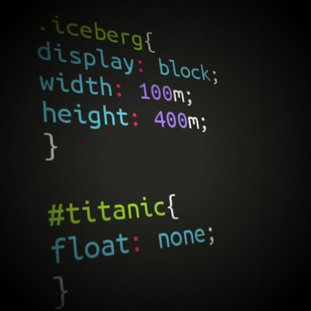

Una página web la vemos en nuestro navegador, o cliente web, y parece una sola entidad, pero no es así, está compuesta por multitud de diferentes ficheros, como son las imágenes, los posibles vídeos y lo más importante, el código fuente que dice donde colocar cada texto, cada imagen o cada video y la forma que tendrán estos al ser colocados en la página. No es problema que las webs estén compuestas por tantos elementos, ya que rápidamente veremos que su organización es fácil y que no se nos van a perder o escapar ninguno.
Como hemos podido imaginar y a modo de resumen, para publicar en Internet necesitaremos construir unos documentos hipertexto, o hipermedia, con sus correspondientes archivos de imagen o video y colocarlos en unos ordenadores que son servidores de páginas web. Pero esto es algo que vamos a tratar de explicar poco a poco en los siguientes capítulos.
Aunque signifique adelantarse a los acontecimientos, es interesante señalar que con una simple acción podemos ver el código fuente de de las páginas, es decir, cómo están hechas por dentro. Para ello en Internet Explorer se ha de pulsar sobre el menú de Ver > Código fuente y en Firefox se ha de seleccionar Ver > Código fuente de la página.
Una vez accionemos el menú para ver el código fuente de la página nos abrirá una ventana con un montón de texto que seguramente nos resultará difícil de entender a primera vista. No importa que no entendamos nada, pero podemos ver que una página web "por dentro" es un texto con código. Con el tiempo aprenderás a escribir ese código por ti mismo, aunque tal vez prefieras olvidarte de las complicaciones de escribir código y utilizar un programa que lo genere por ti, que es otra posibilidad perfectamente válida.